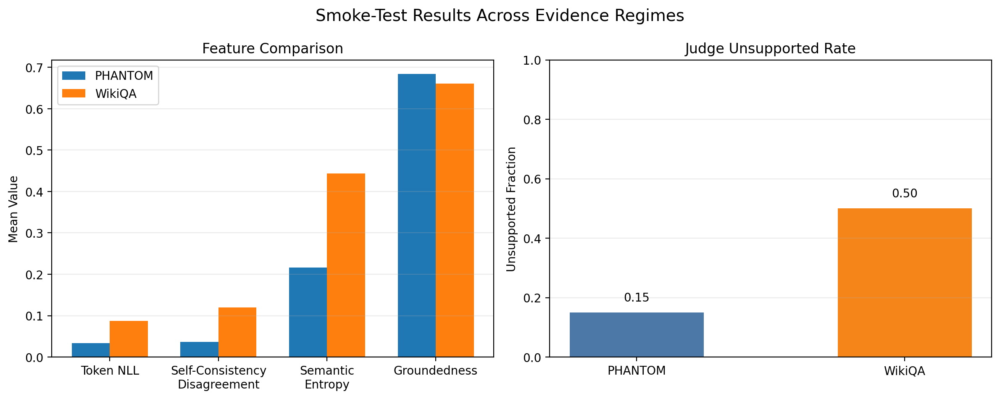

Risk-Adjusted Hallucination Detection for LLMs
Spring 2026 CSCI 5541 NLP: Class Project - University of Minnesota
Team AttentionForge

Baanee Singh

Chinmay Arvind
Rushendra Sidibomma
Yongchean Chhy
Baanee Singh
Chinmay Arvind
Rushendra Sidibomma
Yongchean Chhy
Large Language Models (LLMs) often generate fluent but incorrect responses, known as hallucinations, which pose risks in high-stakes applications. In this project, we develop a risk-adjusted hallucination detection framework that predicts the likelihood that a generated response is unsupported by evidence. Our approach combines multiple uncertainty signals, including token entropy, semantic entropy, and self-consistency, with an evidence-based groundedness signal. These features are used to train a detector that outputs a calibrated probability of hallucination. We evaluate our method across two different grounding regimes (PHANTOM and WikiQA) and study whether combining uncertainty and groundedness signals improves generalization. Our results demonstrate improved reliability through calibration and selective abstention, enabling models to avoid answering when hallucination risk is high.
A figure that conveys the main idea behind the project or the main application being addressed. This figure is from StyLEx.

If you need to explain more about your figure
What did you try to do? What problem did you try to solve? Articulate your objectives using absolutely no jargon.
Large Language Models (LLMs) are capable of generating highly fluent responses, but they often produce incorrect or unsupported information, commonly referred to as hallucinations. These errors are particularly problematic in domains such as healthcare, finance, and law, where incorrect outputs can have serious consequences.
How is it done today, and what are the limits of current practice?
Existing approaches to hallucination detection often rely on a single signal, such as model confidence or external verification. However, hallucinations can arise in different ways depending on the availability of evidence and the structure of the task. As a result, methods that work well in one setting may fail to generalize to another.
Who cares? If you are successful, what difference will it make?
Improving hallucination detection enables safer deployment of LLMs by allowing systems to recognize when they are likely to be wrong. By introducing abstention, choosing not to answer when risk is high, we can trade off coverage for reliability, which is critical in real-world applications.
What did you do exactly? How did you solve the problem? Why did you think it would be successful? Is anything new in your approach?
We develop a hallucination detection framework that predicts the probability that a generated response is not grounded in evidence. Our approach combines four key features:
These features are combined into a learned detector (logistic regression) that outputs a hallucination risk score. This score is then calibrated using temperature scaling to produce a probability of hallucination.
Our key contribution is combining both internal uncertainty signals and external groundedness signals into a unified framework and evaluating its ability to generalize across different grounding regimes.
What problems did you anticipate? What problems did you encounter? Did the very first thing you tried work?
We address challenges such as dataset differences, ensuring consistent feature computation, avoiding data leakage, and maintaining reproducibility across generation and evaluation pipelines.
How did you measure success? What experiments were used? What were the results, both quantitative and qualitative? Did you succeed? Did you fail? Why?
We evaluate our hallucination detector using AUROC, AUPRC, accuracy, F1 score, Expected Calibration Error (ECE), and Brier score. We also analyze risk-coverage and accuracy-coverage trade-offs under different abstention thresholds.
Our experiments compare individual features against combined models and demonstrate that combining uncertainty and groundedness signals leads to improved detection performance and better generalization across datasets.
We further conduct transfer experiments by training on one dataset and evaluating on another, showing how well the detector generalizes across grounding regimes.
| Experiment | 1 | 2 | 3 |
|---|---|---|---|
| Sentence | Example 1 | Example 2 | Example 3 |
| Errors | error A, error B, error C | error C | error B |

Our results show that combining uncertainty-based and evidence-based signals improves hallucination detection performance and enables more reliable model behavior through abstention. However, challenges remain in transferring detectors across datasets due to differences in grounding regimes and calibration shifts. Future work includes improving semantic clustering methods, exploring stronger calibration techniques, and extending the framework to larger models and more diverse datasets.